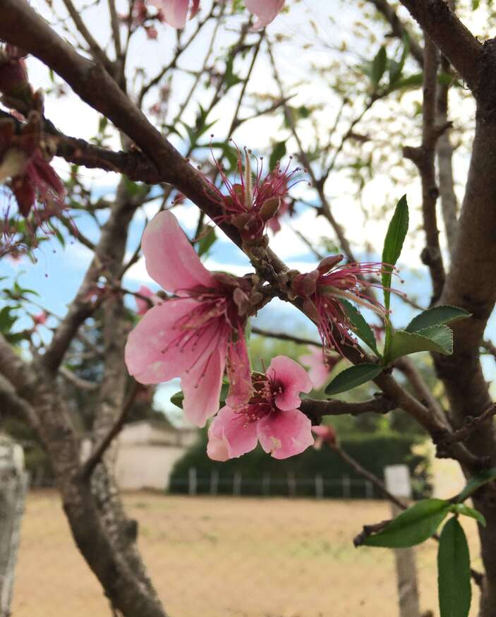

Mi misión es despertar tu interés por aquello que mas amo, las plantas. Este es un proyecto que busca motivar a la gente a plantar y comprender a las plantas no solo como un ser vivo estoico, sino como una nueva dimensión con la que apreciar la vida y la naturaleza que nos rodea.
Para esto te propongo que te únas a nuestra comunidad amante de las plantas, te invito a que conozcas mi historia con ellas, y a poder darte una mano a cuidarlas. También cuento con una galería y un apartado de consejos y de servicios que están a tu disposición!